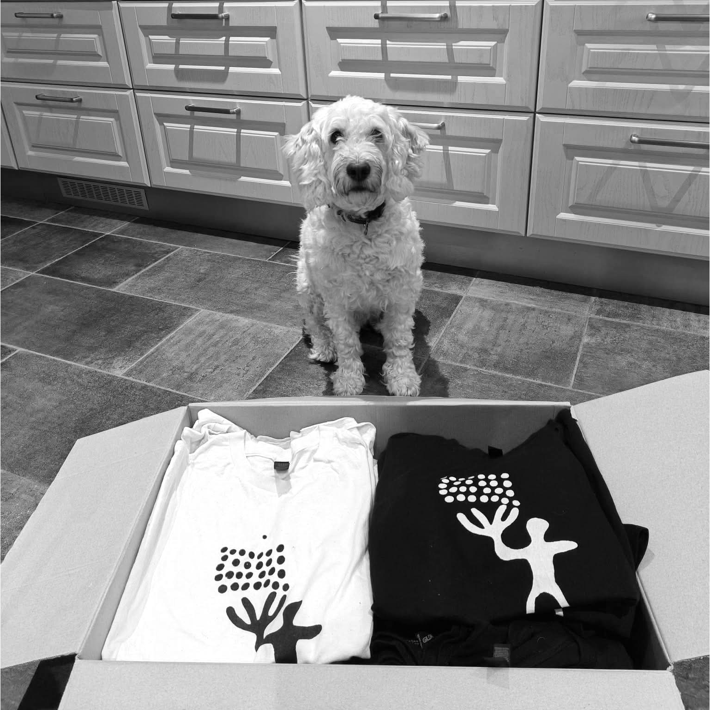
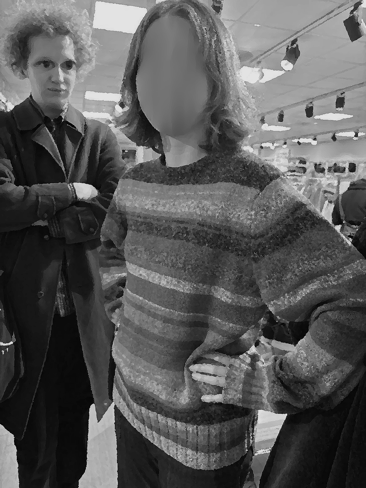
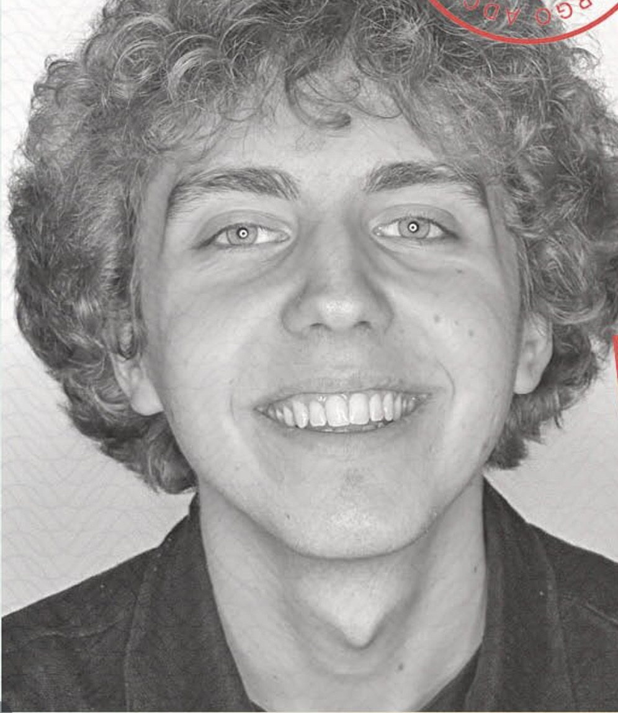
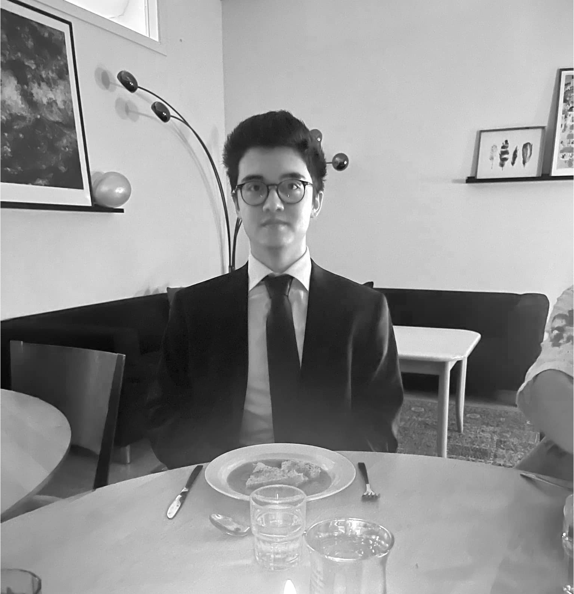
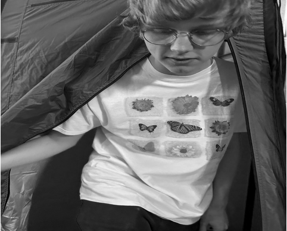
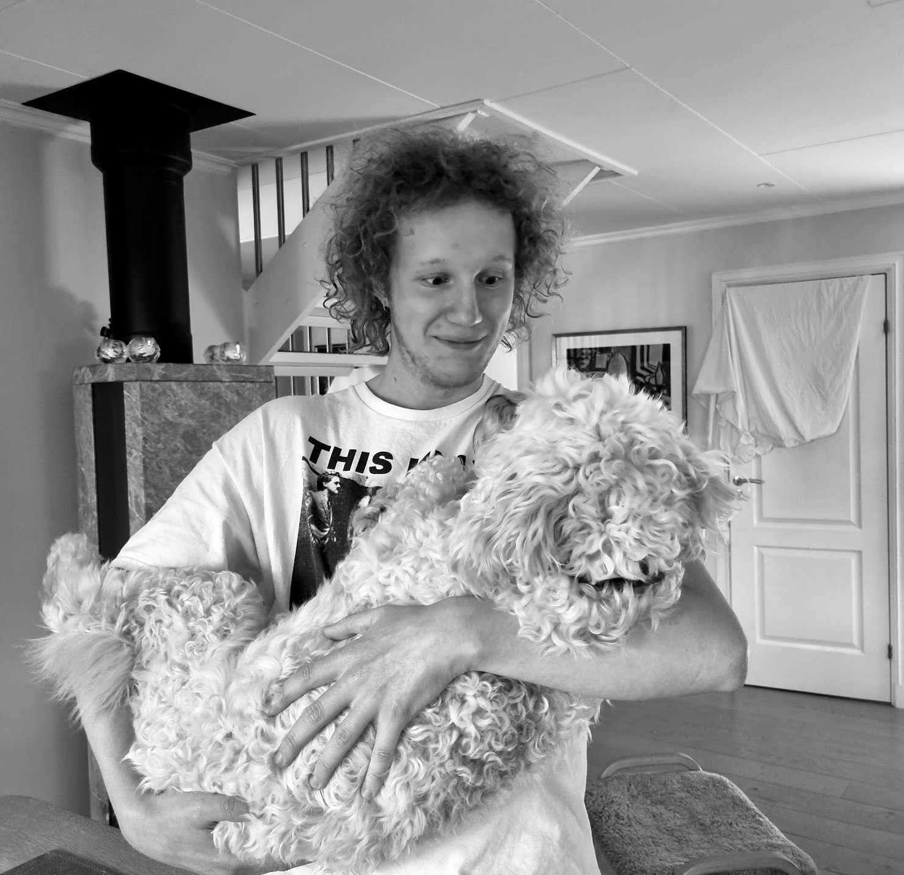
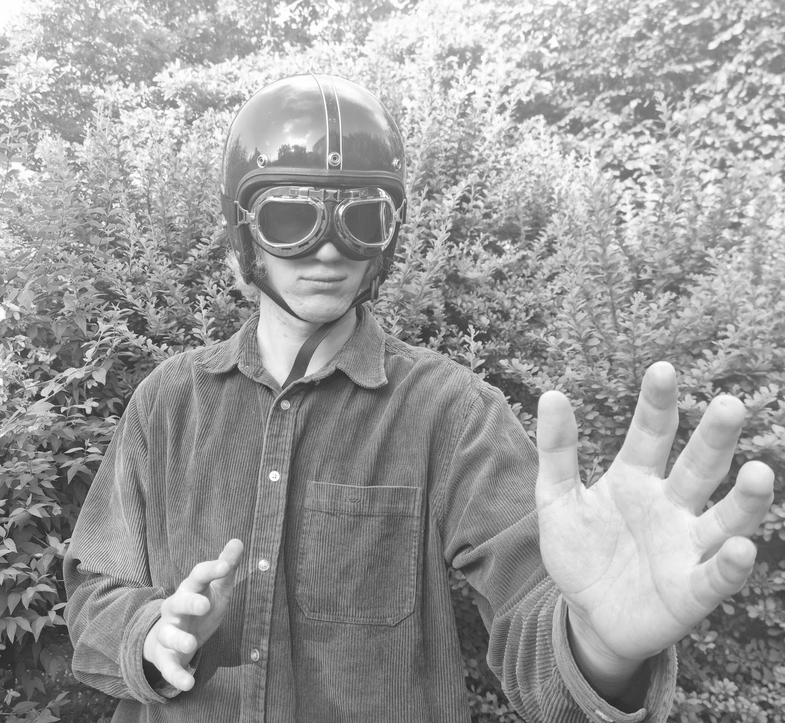
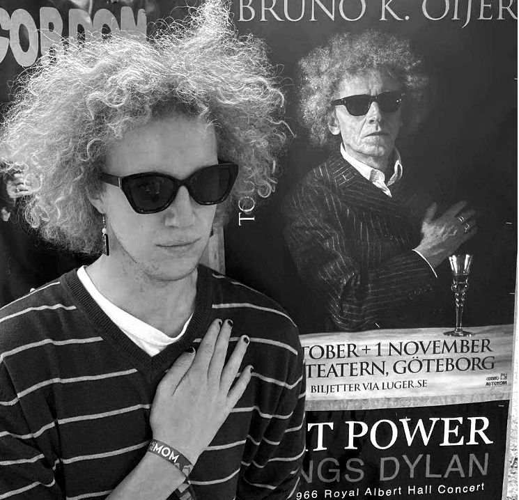

Senaste nytt
Nettle.skin öppnar dotterbolag för kläder – “Vi kommer att tjäna så mycket pengar”
Redaktionen · 3 november 2026

I ett storslaget avtal med modejätten Olsbo & Associates har fastighetsjätten nettle.skin Holdings Financial Advisors and Realtor Group Inc. nu intagit den växande marknaden för designerkläder.
Allan Yheters anonyma källor rapporterar att modedivisionen nu tagit emot den första leveransen om 50 exklusiva t-tröjor. “Vi tror att vi lätt går med vinst på den här affären,” säger den nyligen utnämnda maskoten och lageransvarig Gibson. Det återstår att se hur marknaden reagerar på ännu ett tillskott i den enligt vissa mätta klädmarknaden, men konglomeratet verkar vara säker på investeringen.
Allan Onsin förväntas ärva "monsterförmögenhet" från avliden fastighetsmogul
Redaktionen · 29 oktober 2026

Efter att Allan Onsins turné med nettle.skin blev abrupt avbruten i höstas så begav sig gitarristen på en solsemester i Rom, men även denna klipptes kort då Onsin valde att kalla till rättssalen igår förmiddag.
Enligt sönerna till den ökände storpampen Sven Magnus Aldorise, vars företag äger strax över hälften av alla fastigheter i Sverige, samt en nichad bollsport, så ska Aldorises testamente enbart ha spelats in på diktafon blott ögonblick innan han blev flygbombad i pungkulorna under ett akut NATO ingrepp.
Sönerna menar att förmögenheten var ämnad att delas ädelt mellan "alla någonsin", dvs. alla människor på jorden, i vad som tycks vara en post mortem PR ploj för att bli ihågkommen som en givmild filantrop, medan Allan Onsin å sin sida hävdar att hans egna namn hörs klart och tydligt på inspelningen och att det är inger nals som har ett liknande namn.
Åt vilket håll förmögenheten faller återstår att se efter vad som förmodas bli en lång juridisk process, men intressant att notera är att Allan Onsin till synes redan har vunnit alla någonsins hjärta in the court of public opinion, i och med sitt komiska namn.
Insändare: "Gåsskinn när nettle.skin får Avgrunden att svämma över"
Henry E. Karlsson · 10 oktober 2026

När jag kliver ner i Avgrunden möts jag av Allans skapare. De har två tomma fat framför sig och har precis begått en dödssynd. Försiktigt omfamnar jag Arne och Agneta, som egentligen heter något annat men går under pseudonymer med hänsyn till den höga hotbilden mot Allan och hans familj.
Arne tittar på en i mitt sällskap och nämner hans mustasch. Han frågar om han spelat in några tyska filmer nyligen. Jag nämner att han faktiskt var i Berlin med sin flickvän i somras. Ordet flickvän verkar förvåna Arne och jag lägger märke till att även Arne har mustasch. Han verkar ha gedigen erfarenhet inom ämnet.
Plötsligt stiger vattnet om mina stövlar. Det är dags och jag ursäktar mig från Arne och Agnetas sällskap för att röra mig närmare scenen. Jag frågar en vän vilken svensk insjöfisk första låten är. Han tänker länge. Lite för länge. Som att han inte känner till någon annan än gäddan. Patetiskt. Efter vad som känns som halva låten svarar han klart och tydligt. Mört. Jag håller med och han återvinner mitt förtroende. Men vem fan öppnar ett gig med en mört?
Nästa låt börjar och vattnet når nu upp till knävecken. Här finns ett annat djup, absolut. Enligt inbjudan skulle orkestern lägga ägg men hittills har de uteslutande ägnat sig åt musicerande. Jag tycker man ska vara försiktig med vad man lovar en publik och hoppas de inte begår samma misstag igen.
Rytmsektionen gör ett gediget arbete. De är välklädda, och jag misstänker att basisten hade spelat hälften så bra hade han valt fluga istället för slips. Sångaren genomför en skamlös säljauktion där han skanderar om ett paketerbjudande på tröjor och skivor. Osmakligt men effektivt. Publiken skrattar och verkar älska denna charmör trots att han uppenbart talar i tungor. De är två gitarrister på scen. Orättvist. Ingen i publiken har fått en gitarr. Power to the people, pope Leo. En manlig blondin spelar klaviatur. Den hjälplösa blondinen hörs knappt men om jag spetsar öronen och lyssnar noga hör jag honom. Fantastiska harmonier. Resterande del av konserten lyssnar jag uteslutande på honom, resten av bandet fortsätter ändå.
Vattennivån når nu upp till hakan och Avgrunden gör skäl för sitt namn. Arne och Agneta syndade och det verkar som att det kommer gå ut över oss alla. Inte ens Crowley kan rädda oss nu. Vattnet stiger i en än mer rask fart. Trummorna driver på vågorna, basen drar undan marken och gitarrerna släpper lös otänkbara varelser. Mitt huvud hamnar under ytan och jag väljer att stanna där. Det är kvällens vackraste parti.
Dyngsur går jag ut och tar en cigarett med en ung man av mitt blod. Jag stöter på trummisen och tackar honom för hans tjänst. Vi samtalar kort om sånt man samtalar om innan vi går ner i Avgrunden igen. Nästa band går på och vattennivån sjunker omedelbart. Musiken är bra, tror jag, men det är svårt att följa upp en orkester som nettle.skin.
När jag kommer hem ligger mina tankar och åsikter på soffan jag kallar säng, redo att publiceras. 5 av 5, tydligen. I samma brev står det att redaktionen tackar för min tjänst och att mitt arvode kommer att utgå i pengarna tillbaka. Konserten var gratis.
ETTA I ÅRETS DRAFT!
Redaktionen · 12 oktober 2026

Efter veckor av vilda spekulationer bland självutnämnda experter och dussintals analyserade basgångar står det nu klart: Emil Pellsäter tingas som #1 overall av nettle.skin i årets NTLSKN draft i lördags 10/10.
nettle.skins General Manager Simon Frantzich om valet:
“Det fanns aldrig något tvivel, han var etta på våran lista. Emil är en begåvad tvåvägsbasist med bra grit och compete. Han sätter tonerna djupt i hörnen bakom ljudteknikern, backcheckar alltid när någon tappar beatet, och klagar aldrig på dålig monitorlyssning.”
Pellsäter skrev genast på ett $1.025M AAV 3-års rookiekontrakt.
Såhär säger han själv om att väljas som #1
“Jag vill tacka min familj, mina lärare och tidigare lagkompisar som hjälpt mig nå hit. Jag är djupt imponerad av nettle.skins organisation och faciliteter. Jag vill också tacka GM Simon, och coacherna Allan, Emansig, och Mkhu som har varit väldigt hjälpsamma och snälla. Att spela för nettle.skin är något jag drömt om hela mitt liv och jag ser fram emot det väldigt mycket.”
Allan får ytterligare en gratis gitarr från mannen i Alingsås
Redaktionen · 7 oktober 2026
I en oväntad och mycket välkomnande vändning har Allan tilldelats ännu en gratis gitarr från mannen i Alingsås. Redaktionen kan nu bekräfta att den extra gitarren, som enligt uppgift skall ha levererats med ett leende och ett stort mått av offentligt samvete, mycket väl kan komma att användas under nettle.skin-spelningen på The Abyss den 10 oktober kl. 20, där Allan förväntas stå på scen med en massiv musikalisk arsenal.
Officiellt utlåtande från team SF
Redaktionen · 7 oktober 2026

Officiellt utlåtande från Simon Frantzich befattande 『ORVARS 23-ÅRSKALAS 』, som förmedlat via Allan Yheter inc. tidigare i förmiddags:
Ärade Orvar, samt hela den samlade klientel som ämnar infinna sig vid Orvars tjugotreåriga födelsedagsfest. Med hjärtat nedtyngt av den djupaste förtvivlan och skammen, måste jag härmed tillkännagiva att min medverkan vid Orvars 23-årskalas tillställningen för närvarande svävar osäkert. Mitt kontrakt med det multinationella gitarrmusik konglomeratet nettle.skin tvingar mig nämligen, genom såväl juridiskt som moraliskt tvivelaktiga villkor, att densamma afton klockan tjugo noll noll framträda med rockmusik på andralånggatans ökända The Abyss estrad. Att dras på marken, skrikandes gråtandes och snorig till gitarrmusikens obevekliga penningvälde framför Orvars tjugotreåriga jubileumsfest känns som om mitt hjärta vore inlåst i en fågelbur och jag svalde nyckeln av misstag. Ty en kamrat fyller 23 blott en gång om livsstiden. Måhända kan jag, om ödet och de multinationella intressena så tillåter, “komma till Orvars hus senare eller ses ute”.
Allans Höfner kan komma på torsdag
Redaktionen · 7 oktober 2026

Det ryktas att Allans Höfner-gitarr kan anlända redan på torsdagen den 8 oktober. Redaktionen följer utveckningen noga och kommer rapportera så snart paketet är i Allan händer.
Allans Höfner åter försenad
Redaktionen · 5 oktober 2026

Allan har fortfarande inte fått sin gitarr efter år och dagar av väntan. Staten har ingen kommentar. Nettle.skin hotar med bojkott av mannen i Alingsås som har gitarren.
Allan spelar på Abyss den 10 oktober
Redaktionen · 5 oktober 2026

Allan ger en spelning på Abyss, tillsammans med nettle.skin lördagen den 10 oktober 2026. Boka in datumet – mer information om kvällen kommer när den finns tillgänglig.
Allan världsmästare i Mario Kart 8 “Bull” på Baby Park
Redaktionen · 5 oktober 2026
Allan har vunnit världsmästerskapet i Mario Kart 8-kategorin “Bull” på Baby Park. Segern säkrades efter en intensiv final där Allan visade prov på både precision och kyligt fokus.